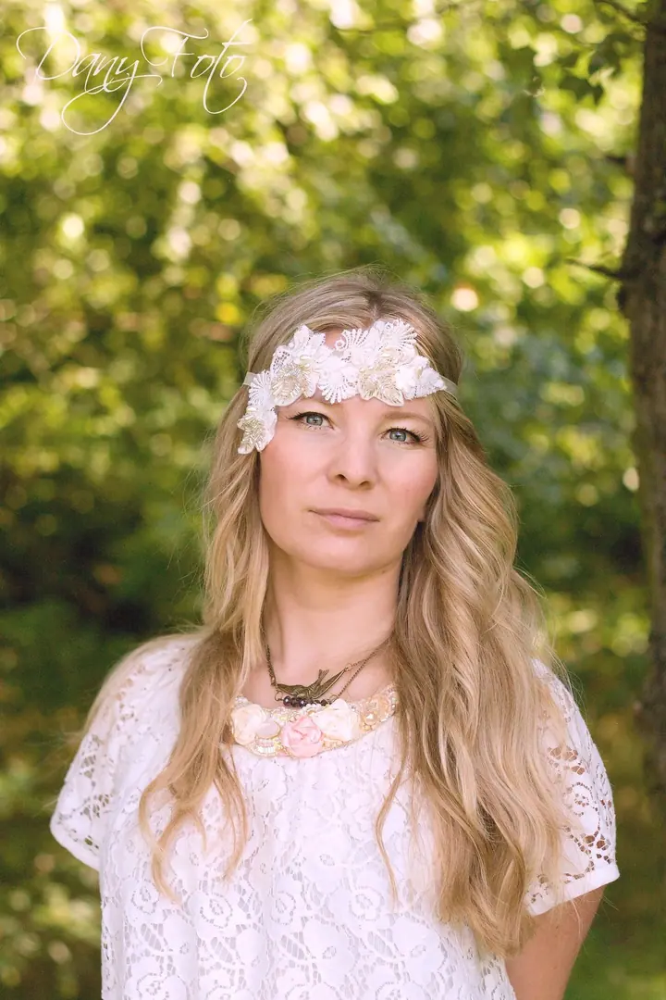

01 / 04
Rodinné focení
Smích vašich dětí, společné objetí a drobné momenty, které tvoří atmosféru vaší rodiny. Vzpomínky, ke kterým se budete rádi vracet i po letech.
Zeptat se na termín→




Fotografie vztahu, které zdobí váš domov
Zeptat se na termín →(01) Ahoj
Jmenuji se Dana Tůmová a fotím vztah lidí a zvířat, rodiny , děti i portréty v okolí Poděbrad, Nymburka a Kolína. Přes 20 let se věnuji výcviku psů, takže vím, jak vašeho psa zaujmout a uvolnit. Výsledkem našeho focení je fotoobraz, který bude zdobit váš domov.
(02) Co fotím
01 / 04
Smích vašich dětí, společné objetí a drobné momenty, které tvoří atmosféru vaší rodiny. Vzpomínky, ke kterým se budete rádi vracet i po letech.
Zeptat se na termín→02 / 04
Přirozené portréty venku v zeleni, v klidném tempu a v měkkém světle.
Zeptat se na termín→Dále nabízím
Společné fotografie vás a vašeho zvířecího kamaráda, na kterých jste krásní i vy. Pes nemusí umět žádné triky, postačí vaše blízkost, hra nebo společná procházka.
↗Vaši profesi zachytím autenticky a profesionálně. Nejde jen o portrét, ale o vizuální příběh o tom, kdo jste, co děláte a jakou hodnotu přinášíte svým klientům.
↗(04) Postup
Od první zprávy po hotovou galerii.
Krok 1 z 4
Ozvěte se mi a já vám ráda vysvětlím, jak to u mě probíhá a co si na focení připravit.
Krok 2 z 4
Nejdřív se seznámím s vaším psem, aby mi důvěřoval. Pak stačí vaše blízkost, hra, pohlazení nebo společná procházka.
Krok 3 z 4
Vybrané snímky upravím a dostanete je v elektronické podobě ke stažení, barevně i černobíle.
Krok 4 z 4
Součástí kolekce je tisk na desku 30×40 cm, který si můžete hned pověsit doma.

Postačí vaše blízkost, pohled a pohlazení.
(05) Za objektivem
Jmenuji se Dana Tůmová a jsem fotografka z okolí Poděbrad, Nymburka a Kolína. Fotografuji vztah lidí a zvířat, protože ten je jedinečný a každý má svůj originál. V mobilu máme spousty fotek, kde je jen náš zvířecí kamarád, ale společných fotografií, kde vám to sluší, je málo nebo vůbec žádné.
Přes 20 let se věnuji výcviku psů, i pro veřejnost, a 12 let jsem strávila u koní. Poznám, kdy se pes cítí bezpečně, vím, jak ho zaujmout a jak s ním komunikovat. Ráda se s ním seznámím předem, aby mi důvěřoval. Při focení vám pomohu psa upoutat i uvolnit a pohlídám ouška a správný postoj.
Sama jsem mámou dvou holčiček, 11 a 8 let, takže vím, že malé děti potřebují prostor a ty větší přehnanou chválu neocení. Rodinné focení se zvířaty je krásná památka a jeho výsledkem je fotoobraz, který zdobí váš domov.
Dana
Dana Tůmová · Fotografka lidí a zvířat
Nemusí. Postačí vaše blízkost, pohled na sebe, hra nebo společná procházka. Psa vám pomohu upoutat i uvolnit a pohlídám ouška a správný postoj.
Kolekce začínají od 3 900 Kč. V ceně je konzultace před focením, retuš, upravené snímky ke stažení v barevné i černobílé verzi a tisk na desku 30×40 cm.
Délkou focení, počtem fotografií a cenou. Na konzultaci spolu vybereme tu, která vám bude sedět.
Určitě. Malé děti potřebují prostor, takže je do ničeho nenutím a focení přizpůsobím jejich tempu. Sama jsem máma dvou holčiček, takže to dobře znám.
(07) Kontakt
Napište pár vět o tom, co si představujete, a termín, který se vám hodí.